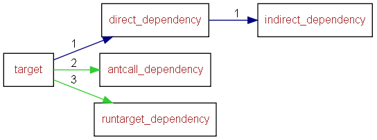

This API document describes the Helium user API (Application Programming Interface) in terms of its Ant targets, properties and other configuration. It has pages corresponding to the items in the navigation bar, described as follows:
Project
A project corresponds to an Apache Ant XML file. Each project contains a number of targets.
Target
Each target has its own page listing the following sections:
Location
Description
Property dependencies. A list of Ant properties that this target uses and their edit status requirements.
Target dependencies. A list of other targets that will be called before or during this target execution.
Target dependencies legend:
Blue arrows point to direct dependencies.
Green arrows point to antcall and runtarget dependencies.

Property Group
A list of Property groups that group together related configuration elements, their usage requirements within that group and their edit status requirements..
Property
Each property has its own page listing the following sections:
Description
Usage
Type
Edit Status : The values could be must, recommended, allowed, discouraged or never.